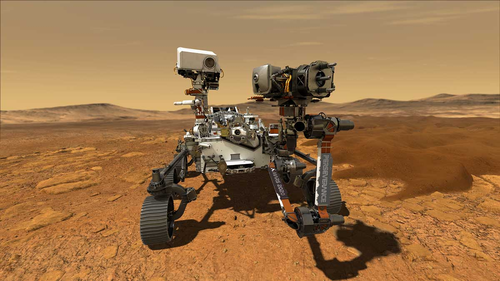

Übersicht
Es gibt heute noch zwei aktive Marsrover der NASA, Perseverance und Curiosity. Auf dieser Webseite kann man nach Bildern, der Kameras, der beiden Mars Rovers suchen. Dies funktioniert über eine der API's der NASA, die Mars Rover Photos API. Es werden Informationen über die beiden Mars Rovers Perseverance und Curiosity aufgelistet. Weiter gibt es eine Grafik die einen Mars Rover darstellt, mit einer Animation.
Perseverance
- Start: 30. Juli 2020
- Landung: 18. Februar 2021
- Ort: Jezero-Krater auf dem Mars
- Gewicht: 1025 kg
- Grösse: 300 cm x 270 cm x 200 cm
Curiosity
- Start: 26. November 2011
- Landung: 06. August 2012
- Ort: Gale-Krater auf dem Mars
- Gewicht: 900 kg
- Grösse: 310 cm x 270 cm x 210 cm